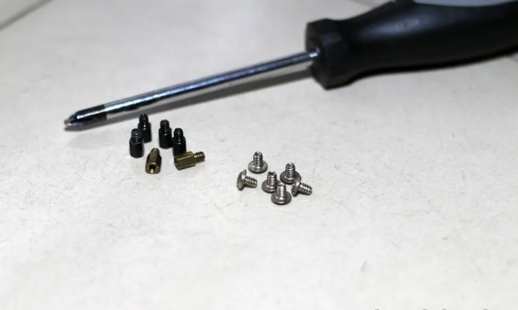

Aprenda a instalar placa mãe no PC com segurança
Quer montar um PC, mas tem dúvidas de como instalar a placa mãe? Esse processo é simples, rápido e fácil, mas requer certa atenção para que não danifiquemos algum componente da placa, que é bem frágil. Uma instalação incorreta pode acarretar problemas futuros como o superaquecimento da placa mãe, o que prejudica outros itens de hardware, tais como processador, HDs e fonte. Para te ajudar a não errar nessa tarefa, siga os passos a passos a baixo.

Passo 1
A primeira ação que devemos tomar antes de iniciar o procedimento de instalação é ter as mãos limpas e bem secas. Uma coisa com a qual devemos nos preocupar é a estática que nossas mãos podem descarregar e, por isso, uma pulseira antiestática é essencial para o trabalho, evitando danos na placa.
Para começar precisaremos de uma chave do tipo Philips, pois todos os parafusos que usaremos são padronizados para esse tipo de chave. Vamos separar os parafusos, pois temos dois tipos: parafusos de fixação e os parafusos normais. Os parafusos de fixação serão usados como uma extensão, ficando entre a placa metálica do gabinete e a placa mãe. O parafuso normal será usado para fixarmos a placa mãe no gabinete.
Após os procedimentos acima descritos, partiremos para o trabalho pesado. Primeiro vamos verificar o gabinete. Alguns gabinetes nos dão a opção de remover a placa metálica em que a placa mãe é instalada, outros não. No caso específico com o qual estamos trabalhando, nosso gabinete não dá a opção de remover essa placa metálica, então teremos que trabalhar em um espaço físico um pouco mais limitado. Vamos pegar o gabinete e deitá-lo com cuidado em uma superfície plana.

Passo 2
Em seguida, iremos identificar os furos dos parafusos da placa mãe. A identificação é rápida e descomplicada, pois são aqueles que têm o revestimento em metal. Como temos vários tamanhos de placas mães no mercado, existem vários furos no gabinete, então faremos um teste básico. Colocaremos a placa mãe em cima da placa de metal, porém, sem encostar diretamente no gabinete, e já poderemos ver quais são os buracos exatos para nossa placa.

Passo 3
Feito isso, colocaremos os parafusos de fixação na placa de metal, lembrando que temos que colocá-los no local exato que vimos na marcação da placa mãe. Logo após, com muito cuidado, colocaremos a placa mãe exatamente em cima dos parafusos de fixação, lembrando que estes parafusos devem combinar com os furos metalizados da placa. Esses furos são metalizados para que você possa colocar um parafuso diretamente na placa sem que haja algum tipo de dano na mesma, como um curto-circuito.

Passo 4
Iremos agora para a parte da fixação da placa mãe na placa metálica do gabinete. Após posicionar a placa mãe sobre os parafusos de fixação, parafusaremos cada um dos furos com bastante cuidado e atenção para que a chave não escape e acabe riscando ou danificando a placa.

Passo 5
Um gabinete padrão dispõe das seguintes ligações do painel frontal: botão liga/desliga, botão reset e USBs. Esses fios são ligados na placa mãe. Para saber onde conectar esses fios é importante fazer a leitura do manual de instruções, pois a posição pode variar de acordo com o modelo da placa.

Como vimos, é um procedimento muito simples mas que requer cuidado. Ao instalar ou fazer a manutenção da sua placa mãe, é importante seguir atentamente o manual de instruções, pois o mesmo ajuda a executar o procedimento de forma correta, evitando que o produto perca a garantia do fabricante.